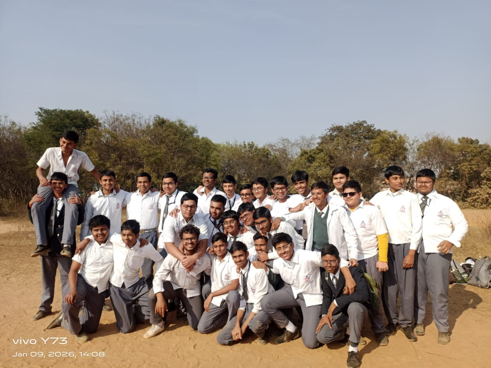

THE SNITCH
SHIRT SIGNING DAY A DISAPPOINMENT?
One of the most hyped events of 10th grade - the shirt signing was to happen again on 9th January 2026 however, not all could do it, leading to widespread dissatisfaction among a few. However for those who could do it, it turned out to be a memorable event. Let the past be the past now, I wish we could've set a better example for our successors. 
HONOURABLE MENTION
 "present sir ahh pose"
"present sir ahh pose"
TUTORIAL BOSSES OVER, MARCHING TO THE FINAL BOSS NOW...
With the defeat of the tutorial bosses, we descend to the final boss arena...however the custom is to take some rest during our descent and that is the school picnic. The second most hyped event after the seemingly "failed" shirt signing. Hyped not for destination but the final journey which shall conclude our 11 year long journey.
Till now it is known that...
- The journey will be roughly of 1 - 1.5 hours
- The menu is pretty simple consisting of chicken/mutton mix veg and rice
LETTER OF APOLOGY FROM THE EDITOR
I am sincerely sorry for rushing the snitch, I was worried I would procastinate and this snitch won't get to see the light of the day. Anyways having a poorly made snitch which could be made better over time is better than giving false hope. I'll slowly perfect the design, just like the snitch on paper. Really sorry for not making this up to the mark